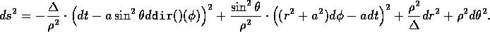
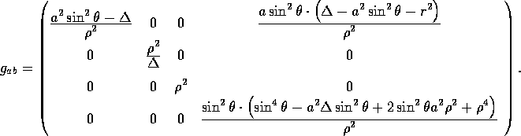
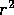
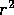
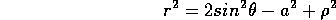

Although General Relativity and most tensor analysis requires only that algebra be performed and derivatives taken (both of which are easily implemented on a computer), it is still necessary for the user to aid the machine in finding a workable path to the desired goal. The brute force approach (i.e. start it up and let it take a whack at the problem) will usually not succeed except for very simple problems or on very fast machines with lots of memory. Despite its high-sounding name, computer algebra remains as much an art as it is a science. Hence, although it is possible for the user to, with a single command, compute all the objects in a direct line from the metric to the Weyl tensor, unless the metric is very simple the calculation is not likely to succeed. The user must take a hand in simplifying the intermediate results before the more complicated objects are computed, otherwise the calculation will either take an inordinate amount of time, or, in the worst case, run out of memory. The techniques for managing large expressions are general ones and apply to REDUCE as much as to REDTEN; here we shall point out some particular points to observe that relate specifically to the sorts of problems encountered by the REDTEN user.
The term ``management'' is chosen to reflect the process whereby the user interacts with the system to maintain expressions in a compact and reasonably simple form, and to avoid what is commonly referred to as ``intermediate expression swell''. Without attention it is quite possible that the components of some objects such as the Riemann or Ricci tensors could become so large as to jeopardize the calculation, even though the final answer is relatively simple (eg. the Weyl tensor is zero).
The most common culprit which results in unweildly expressions is unsimplified denominators, specifically those which involve sums, and which must be expanded over the numerators of other terms when the system makes common denominators. One way to avoid this is to turn off the REDUCE switch mcd, but this usually just postpones the difficulties, since no real simplification and cancellations likely have occured and a large expression involving many terms must later be placed in common denominator form if it is to be finally simplified.
In this regard, metrics come in two varieties: those which are diagonal and hence are trivial to invert; and those which are not diagonal, and generally yield a complicated denominator upon inversion. It is most important that the user address this issue before proceeding to the computation of the Christoffel symbols, and the christoffel1() function will print a warning message if the metric inverse seems not have not been simplified (This only means that the multiplier property must be combined with the components, as is done by mapfi() (qv)).
A method that is sometimes useful in dealing with sums in denominators is substituting another symbol so that the sum is reduced to a simple product. However, this can yield explosive expressions elsewhere and, additionally, the user must remember to declare the dependencies of the new symbols, or to define their derivatives explicitly. Needless to say, if these are forgotten, the calculations may proceed quite smoothly but they no longer represent the intended metric. The decision of whether and when (and what) to substitute for various terms or when to introduce new ones is one of the only controls the user has over how the calculation proceeds. The user may also turn on or off the various REDUCE switches that control the way in which REDUCE combines expressions; of these exp, factor, gcd, and mcd are the most useful. However, as noted above these may often simply postpone the difficulties, since at some point the expression must be expanded for it to be simplified.
An example involving the Kerr metric (a metric much-maligned for being complicated, when in fact it is still relatively simple) is used to illustrate some principles of expression management in REDTEN. The Kerr metric is well known in General Relativity and is identified with the vacuum solution of the Einstein Field Equations outside a spinning mass. In Boyer-Lindquist coordinates (, , , ) the line-element has the form:

where
 ,
,
In terms of a metric tensor, the Kerr metric is written as

We shall enter this metric in line-element form and create the metric:
#: coords '(t r th ph)$ #: ds2 := - delta/rho2*(d(t)-a*sin(th)^2*d(ph))^2 + sin(th)^2/rho2*((r^2+a^2)*d(ph)-a * d(t))^2 + rho2/delta * d(r)^2+rho2*d(th)^2$ #: metric(ds2); computing g2 cofactor finished. determ finished. invert finished. g2We first observe that there are more messages during the computation of this metric, since it takes more work to invert it. At this point the metric inverse can be simplified in several ways. When the system inverts a non-diagonal metric, the reciprocal of the determinant of the metric is placed as a multiplicative factor on the multiplier property of the inverse. This can be examined (and altered) with the function multiplier()
 :
:
#: multiplier(g_inv); % note we use the generic name
2 4 4 2 4 2 2 2
( - 1)/(sin(th) (sin(th) a - 2 sin(th) a - 2 sin(th) a r
4 2 2 4
+ a + 2 a r + r ))
If there is a second argument to multiplier(), the multiplier of
the object is replaced by that value. Hence, the user can first save
the multiplier, and then replace it with some other expression that
presumably will help the calculation proceed. One could also examine
the multiplier for a sub-expression that could be replaced by a
symbol, as mentioned above.
For the Kerr metric, another approach has proven to work well. It will
be observed that substitutions for  and (rho2
and delta) have not yet been made. One can invert the relation
for and solve for  to yield the substitution
and (rho2
and delta) have not yet been made. One can invert the relation
for and solve for  to yield the substitution

which is best entered as a REDUCE let rule:
#: let r^2=a^2*sin(th)^2-a^2+rho2;Whenever is formed during the calculations that will follow it will immediately be replaced by this substitution. However, the metric and its inverse still need to have this rule applied. First we shall show that in fact this substitution does provide a useful simplification by re-evaluating the multiplier of the metric inverse:
#: multiplier(g_inv);Obviously this expression is much more compact than the previous one, and is no longer a sum. Note however, that the actual value of the multiplier property is as yet unchanged. Also recall that new let rules and assignments can be evaluated in a given expression by applying the REDUCE functions sub() or reval() to the expression.- 1 ---------------- 2 2 sin(th) rho2